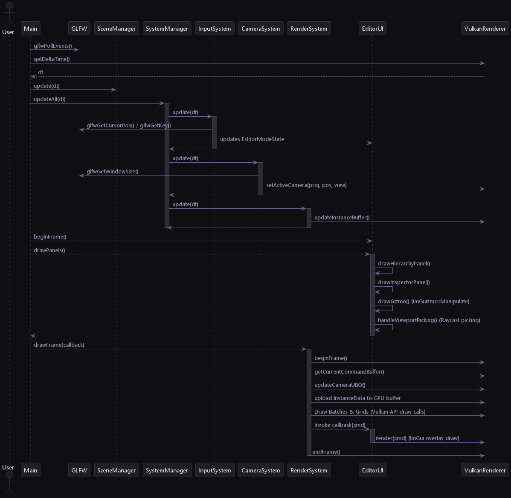

Loading...
Searching...
No Matches
Engine Architecture
This document describes the high-level architecture and system layout of the C++ Game Engine Prototype.
System Design Overview
The engine is structured as a modular desktop application in C++20, utilizing GLFW for OS windowing/events and Vulkan for rendering. The application maintains a clear separation between core systems, resource managers, systems logic, editor GUI, and the application level.

System Architecture
Architectural Layers
- Application Layer (Application.cpp, SceneManager, DefaultScene): The bootstrap/entry point. It reads runtime configurations, creates the window, instantiates the ECS Registry, binds standard systems, and dynamically loads the startup scene.
- Entity-Component System (ECS) Layer (Registry, EntityManager, ComponentStorage): A lightweight, custom ECS backend that manages entities, component allocations, and subscriptions. Component data is stored contiguously in memory pools (ComponentStorage) to maintain maximum cache locality.
- Systems Layer (System, SystemManager, PhysicsSystem): Encapsulates logical behaviours like rendering, camera movement, and 3D rigid body dynamics. The PhysicsSystem evaluates bounding volume collisions and integrates linear/angular velocities.
- Editor Layer (EditorUI, EditorModeState): An interactive debug panel and WYSIWYG editor powered by ImGui and ImGuizmo. Enables real-time entity manipulation, scene hierarchy inspection, component modification, collider wireframe toggles, and scene load/save options. Can be disabled for standalone play.
- Renderer Layer (VulkanRenderer, core/ abstractions): Wraps Vulkan objects (devices, swapchains, buffers, descriptor pools, command managers, pipelines) in custom, safe RAII classes. Manages double-buffering, data upload to VRAM, depth buffers, and draw command recording.
Frame Lifecycle & Execution Flow
The engine operates on a single-threaded game loop inside Engine::Application::run(). The lifecycle of a single frame comprises polling OS events, updating active scenes, updating ECS systems, drawing the UI panels (in editor mode), and submitting Vulkan command buffers for drawing.
Core Loop Structure (Application::run())
Below is the C++ structural skeleton of the game loop:
void Application::run() {
onStart();
while (running && !renderer->shouldClose()) {
// 1. Poll OS windowing and inputs events
glfwPollEvents();
float dt = renderer->getDeltaTime();
// 2. Custom game override ticks
onUpdate(dt);
// 3. Update scene transitions and logic
sceneManager.update(dt);
// 4. Process ECS systems (InputSystem -> CameraSystem -> RenderSystem)
systemManager.updateAll(dt);
if (config.enableEditor && editorUI) {
// 5a. Record editor panel overlays
editorUI->beginFrame();
editorUI->drawPanels();
// 6a. Render frame with ImGui overlay
renderSystem->drawFrame([this](VkCommandBuffer cmd) {
editorUI->render(cmd);
});
} else {
// 5b. Standalone mode: Render clean viewport fullscreen (no UI)
renderSystem->drawFrame();
}
}
onShutdown();
}
The sequence below illustrates the frame execution flow:

Frame Lifecycle Sequence
Detailed Loop Phases
- OS Event Polling: Calls glfwPollEvents() to update mouse/keyboard and window resizing data.
- Scene Update: Updates active scene logic via SceneManager::update(dt).
- ECS Systems Update: Walks through the registered list of systems in the SystemManager and calls update(dt):
- Input System: Reads mouse delta and WSADQE keys. When Fly Mode is active, it hides the cursor and updates the InputComponent's look/move vectors. When Edit Mode is active, it releases the mouse cursor back to ImGui.
- Camera System: Reads the InputComponent and updates the active camera's view-projection matrices. Computes movement vectors in 3D space, applying mouse sensitivity and speeds, then propagates updates to the VulkanRenderer.
- Render System (Update): Compiles active entity model matrices, colors, materials, and mesh configurations into a CPU cache (InstanceDataSoA) to prepare for instanced draw calls.
- Editor Panel Draw: Records ImGui layouts, inspects properties of the selected entity, captures viewport mouse clicks for Raycast picking, and applies 3D transformations via ImGuizmo.
- Render Draw Frame: The RenderSystem::drawFrame coordinates Vulkan-specific recording:
- Acquires an image from the swapchain.
- Pushes camera uniform buffer data (View-Projection matrix).
- Uploads instance data (model matrices, colors) to the GPU dynamic instance buffer.
- Draws grid elements and model batches using push constants.
- Executes the overlay callback, triggering ImGui Vulkan backend render commands.
- Submits the recorded command buffer to the graphics queue and presents the rendered swapchain image.
Data-Driven Scenes & Standalone Configuration
Instead of compiling hardcoded C++ scene classes (like TestScene), the engine parses level data dynamically at runtime:
- DefaultScene: Reads a serializable JSON file on launch and invokes SceneSerializer to instantiate ECS entities and upload assets automatically.
- project.settings: A settings configuration file adjacent to the executable that sets the startup window title, dimensions, starting scene path, and the enableEditor toggle flag.
- Standalone Mode: Setting "enableEditor": false locks mouse cursor control by default, enables flight movement controls, and disables the ImGui overlay and windowing hooks entirely.
Asset Pipeline & Resource Caching
The engine implements a lightweight asset manager (ResourceManager) to handle external model geometries and image file decoding:
- glTF Parser (cgltf): Recursively reads nodes, meshes, triangles, and textures, creating standard ECS entities with vertex buffers uploaded directly to GPU memory.
- Texture Loader (stb_image): Decodes image formats into pixels, staging memory copies onto device-local Vulkan images. Applies a vertical flip on load to match Vulkan's downward Y-coordinate space.
- Resource Caching: Maintains mapping tables of loaded meshes/textures. If multiple entities share the same asset path, the manager serves cached descriptor sets, preventing duplicate VRAM allocations.
- Fallback white texture: A default 1x1 white texture bounds to materials without designated textures to maintain visual compatibility inside shaders.
Architectural Trade-Offs
Single-Threaded Main Loop & Job System
- Why: The frame execution loop operates on the main thread to simplify Vulkan command buffer submission and swapchain synchronization. However, parallelizable loops are offloaded to our multi-threaded Job System via parallel-for chunking.
- Trade-off: The Job System uses a lock-free yielding design to synchronize threads without locking the main game loop, keeping performance high and preventing deadlocks.
Decoupled Scene / Engine Splitting
- Why: The core engine is built as a static library, keeping it completely separated from the sandbox game executable. Game code only defines custom components, linking to the library.
- Trade-off: This isolates systems nicely but requires compiling custom serialization hooks for custom game components (via ComponentSerializerRegistry) to bridge the engine-library boundary. However, using the templated registerComponent<T> helper encapsulates serialization directly inside the component struct.